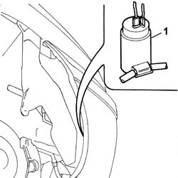
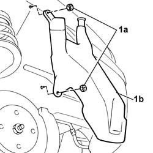

5050A10 windscreen washer fluid reservoir (in engine bay) - r+r
- Path
- Procedures > 50 AUXILIARY UNITS > 5050 SCREEN WASHERS AND HEADLAMP WASH/WIPE > 5050A windscreen and headlamp washer reservoir > 5050A10 windscreen washer fluid reservoir (in engine bay) - r+r
- Kind
- repair procedure (removal / refitting; the operation number is the code)
- Applies to
- all engines; all production periods
- Interactive page
- https://sloeber94.github.io/elrnDB-fDbl/en/#/2584854
Applies to: all engines; all production periods
 Removing
Removing
 Refitting
RefittingPlace the car on a ramp.
Disconnect the battery negative terminal.
Op. 4450B04 RIGHT FRONT WHEEL - R.R.
Op. 7055B54 PROTECTION/GUARD UNDER ENGINE - R.R.
Op. 7055B64 ENGINE COMPARTMENT DUST PROTECTION IN FRONT WHEEL ARCH LINER (ONE) LEFT OR RIGHT - R.R.
Position a suitable container for collecting the windscreen washer fluid.
1. Release the electric pump from its housing and collect the fluid in the container.

Applies to: all engines; all production periods
1. Undo the fixing nuts (1a) and remove the reservoir (1b).

Applies to: all engines; all production periods
Refitting
RemovingPosition the reservoir and tighten the nuts fixing it to the bodyshell.
Fit the electric pump in its housing.
Op. 7055B64 ENGINE COMPARTMENT DUST PROTECTION IN FRONT WHEEL ARCH LINER (ONE) LEFT OR RIGHT - R.R.
Op. 7055B54 PROTECTION/GUARD UNDER ENGINE - R.R.
Op. 4450B04 RIGHT FRONT WHEEL - R.R.
Connect the battery negative terminal.
Top up the windscreen washer fluid and remove the vehicle from the lift.
Topics linked from this page (3)
- 4450B04 right front wheel r r
- 7055B54 under-engine guard - r r
- 7055B64 Engine compartment DUST shield in front wheel arch (one), left or right - R.R.